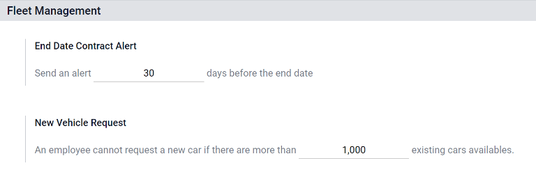
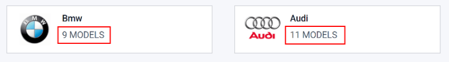
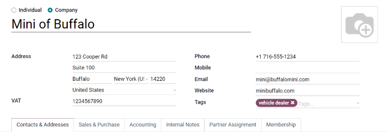

Flota¶
Este documento describe todas las configuraciones y ajustes para la aplicación Flota tales como ajustes, fabricantes, modelos de vehículos y categorías de modelo.
Ajustes¶
Para acceder al menú de ajustes, vaya a . Solo hay dos ajustes que debe modificar: la alerta de fecha de finalización del contrato del vehículo y un límite para las solicitudes de nuevos vehículos.
Alerta de fecha de finalización del contrato¶
El campo Alerta de fecha de finalización del contrato define un retraso de alerta para las personas responsables de los contratos de los vehículos. Las personas responsables recibirán un correo electrónico en la cantidad de días definidos en este campo informándoles que el contrato de un vehículo está por finalizar.
Nota
Abra un contrato para determinar quién es la persona responsable del mismo. La persona que aparece como Responsable en la sección Información del contrato es la persona que recibirá la alerta.
Para acceder a todos los contratos, vaya a la y todos los contratos aparecerán en la lista. Haga clic en un Contrato para visualizarlo.
También puede visualizar un contrato individual desde la , luego haga clic en un vehículo individual. En el formulario del vehículo, haga clic en el botón inteligente Contratos en la parte superior de la página. En la lista solo aparecerán los contratos asociados con este vehículo. Haga clic en un contrato individual para abrirlo. La persona responsable aparece en el contrato.
Solicitud de nuevo vehículo¶
El campo Solicitud de nuevo vehículo establece un límite para la cantidad de nuevos vehículos que se pueden solicitar según la disponibilidad de la flota. Un empleado que completó el formulario de configuración salarial (luego de recibir una oferta de trabajo) no podrá solicitar un nuevo automóvil si el número de automóviles existentes es mayor que el número especificado en el campo Solicitud de nuevo vehículo. Ingrese el límite específico con el número de automóviles disponibles existentes en este campo.
Example
Si el límite de Solicitud de nuevo vehículo está configurado en 20 vehículos y hay 25 vehículos disponibles, entonces un empleado no podrá solicitar uno nuevo. Si solo hay 10 automóviles disponibles, podrá solicitarlo.
Fabricantes¶
La aplicación Flota de Odoo está preconfigurada con sesenta y seis fabricantes de automóviles y bicicletas que se usan con frecuencia en la base de datos, junto con sus logotipos. Para poder visualizarlos, vaya a la .
Los fabricantes aparecen en una vista de lista en orden alfabético. En la tarjeta de cada fabricante se muestra cuántos modelos específicos están configurados para ese fabricante en particular. Odoo cuenta con cuarenta y seis modelos preconfigurados de cuatro grandes fabricantes de vehículos y un importante fabricante de bicicletas: Audi, BMW, Mercedes, Opel (automóviles) y Eddy Merckx (bicicletas).
Agregar un fabricante¶
Para agregar un nuevo fabricante a la base de datos, haga clic en Nuevo, aparecerá el formulario correspondiente. Solo es necesario proporcionar dos datos, el nombre del fabricante y su logotipo. Escriba el nombre del fabricante en el campo indicado y seleccione una imagen para establecer como logotipo. Una vez que haya completado la información, haga clic en Guardar.
Modelos de vehículos¶
Muchos fabricantes producen varios modelos distintos, así que es importante que especifique el modelo de vehículo que agrega a la flota. Odoo cuenta con modelos preconfigurados de automóviles de cuatro principales fabricantes de automóviles y uno de un fabricante de bicicletas: Audi, BMW, Mercedes, Opel (vehículos) y Eddy Merckx (bicicleta). Si un vehículo que no está incluido en estos modelos preconfigurados de los fabricantes es parte de una flota, tendrá que agregar el modelo (o el fabricante) a la base de datos.
Modelos preconfigurados¶
Los siguientes modelos están preconfigurados en Odoo y no es necesario que los agregue a la base de datos:
AUDI |
BMW |
Eddy Merckx |
Mercedes |
Opel |
|---|---|---|---|---|
A1 |
Serie 1 |
San Remo 76 |
Clase A |
Agilia |
A3 |
Serie 3 |
Clase B |
Ampera |
|
A4 |
Serie 5 |
Clase C |
Antara |
|
A5 |
Serie 6 |
Clase CL |
Astra |
|
A6 |
Serie 7 |
Clase CLS |
Astra GTC |
|
A7 |
Serie Híbrido |
Clase E |
Combo Tour |
|
A8 |
Serie M |
Clase GL |
Corsa |
|
Q3 |
Serie X |
Clase GLK |
Insignia |
|
Q5 |
Serie Z4 |
Clase M |
Meriva |
|
Q7 |
Clase R |
Mokka |
||
TT |
Clase S |
Zafira |
||
Clase SLK |
Zafira Tourer |
|||
Clase SLS |
Agregar un nuevo modelo¶
Puede agregar nuevos modelos de vehículos con facilidad a la base de datos. Para agregar uno, vaya a la . Haga clic en Nuevo para abrir un formulario de modelo de vehículo. Escriba la siguiente información en el formulario y luego haga clic en Guardar. Tenga en cuenta que algunos campos son específicos de empresas con sede en Bélgica, por lo que no todos los campos o secciones pueden estar visibles, dependen de la ubicación de la empresa.
Nombre del modelo: escriba el nombre del modelo en el campo.
Fabricante: seleccione el fabricante del menú desplegable. En caso de que no esté configurado, escriba el nombre del fabricante y luego haga clic en Crear o Crear y editar.
Tipo de vehículo: seleccione uno de los dos tipos de vehículos preconfigurados desde el menú desplegable, puede elegir entre Automóvil o Bicicleta. Los tipos de vehículos están codificados en Odoo y están integrados con la aplicación Nómina, pues los vehículos pueden formar parte de los beneficios de un empleado. No es posible agregar tipos de vehículos adicionales, esto afectaría a la nómina.
Categoría: seleccione la categoría a la que pertenece el vehículo desde el menú desplegable. Para crear una nueva categoría, escriba la categoría y luego haga clic en Crear (nueva categoría).
Nota
Al seleccionar el fabricante, su logotipo aparecerá en automático en el cuadro de imagen ubicado en la esquina superior derecha.
Pestaña de información¶
Modelo¶
Número de asientos: escriba el número de asientos para pasajeros que tiene el vehículo.
Número de puertas: escriba el número de puertas que tiene el vehículo.
Color: proporcione el color del vehículo.
Año del modelo: escriba el año en que se fabricó el vehículo.
Enganche de remolque: seleccione esta casilla si el vehículo cuenta con un enganche de remolque instalado.
Salario¶
Nota
La sección de Sueldo aparece solo para las empresas con sede en Bélgica y solo si la configuración de localización de la empresa está establecida en ese mismo país. Todos los valores de costos son mensuales con excepción del Valor del catálogo (IVA incluido).
Se puede solicitar: seleccione esta casilla si los empleados pueden solicitar este modelo de vehículo.
Valor del catálogo (IVA incluido): proporcione el MSRP del vehículo en el momento de la compra o el alquiler.
Tarifa de CO2: este valor se calcula de forma automática según las leyes y regulaciones de Bélgica y no se puede modificar. El valor está sustentado en la cifra ingresada en el campo Emisiones de CO2 en la sección Motor del formulario del vehículo.
Importante
Si modifica el campo emisiones de CO2, el valor en el campo tarifa de CO2 se ajustará según corresponda.
Costo (depreciado): escriba el costo mensual del vehículo, el próximo empleado en recibir una oferta de trabajo podrá visualizar esta información desde el configurador salarial disponible. Este valor modifica el salario bruto y neto del empleado asignado al vehículo. Esta cifra se deprecia con el tiempo según las leyes fiscales locales. El costo (depreciado): no se deprecia en automático en el modelo de vehículo, solo se deprecia en función del contrato vinculado a un vehículo específico y no en el modelo general.
Costo total (depreciado): este valor es la combinación de los campos Costo (depreciado) y Tarifa de CO2. También se deprecia con el tiempo.
Motor¶
Tipo de combustible: seleccione el tipo de combustible que utiliza el vehículo en el menú desplegable. Las opciones son: Diésel, Gasolina, Híbrido de diésel, Híbrido de gasolina, Híbrido de diésel enchufable, Híbrido de gasolina enchufable, GNC, GLP, Hidrógeno o Eléctrico.
Emisiones de CO2: escriba las emisiones promedio de dióxido de carbono que produce el vehículo en gramos por kilómetro (g/km). Esta información la proporciona el fabricante del automóvil.
Estándar de CO2: escriba la cantidad estándar de dióxido de carbono en gramos por kilómetro (g/km) para un vehículo de tamaño similar.
Transmisión: seleccione el tipo de transmisión con menú desplegable, puede ser Manual o Automática.
Potencia: si el vehículo es eléctrico o híbrido, proporcione la potencia que utiliza el vehículo en kilovatios (kW).
Caballos de fuerza: ingrese los caballos de fuerza del vehículo en este campo.
Impuestos sobre caballos de fuerza: proporcione el importe gravado en función del tamaño del motor del vehículo. Esto se determina a través de los impuestos y regulaciones locales, además varía según la ubicación. Le recomendamos que consulte a su departamento de contabilidad para asegurarse de que el valor es correcto.
:guilabel:`Deducción fiscal: este campo se completa de forma automática según las especificaciones del motor y no se puede modificar. El porcentaje toma como base los ajustes de localización y las leyes fiscales locales.
Pestaña de proveedores¶
Los proveedores específicos de vehículos (por ejemplo, las concesionarias) no se enumeran por separado de otros. Los proveedores a los que puede comprar un vehículo también aparecen en la lista correspondiente en la aplicación Compra.
En esta pestaña debe agregar a los proveedores de los que puede comprar vehículos. Para agregar uno haga clic en Agregar, esta acción abrirá una ventana emergente con una lista de todos los proveedores disponibles en la base de datos. Para seleccionar al proveedor que desee agregar, haga clic en la casilla junto al nombre del proveedor y luego en Seleccionar. Puede agregar tantos proveedores como desee a esta lista.
Si un proveedor no está en la base de datos puede agregarlo si hace clic en Nuevo. El formulario de proveedor se abrirá y allí deberá ingresar la información en la pestaña correspondiente, luego haga clic en Guardar y cerrar para agregar el proveedor y cerrar la ventana o en Guardar y crear nuevo para agregar el proveedor actual y crear otro.
Categoría del modelo¶
Para organizar mejor una flota le recomendamos agrupar los modelos de vehículos en una categoría específica, así podrá visualizar con mayor facilidad qué tipos de vehículos la componen. Las categorías de modelos se establecen en el formulario de modelo de vehículo.
Vaya a la para visualizar todos los modelos configurados hasta el momento, aparecerán en una vista de lista.
Agregar una nueva categoría de modelos¶
Haga clic en Nuevo para agregar una nueva categoría, aparecerá una nueva línea de entrada en la parte inferior de la lista. Escriba la nueva categoría y luego haga clic en Guardar para almacenar la entrada.
Para reorganizar cómo aparecen las categorías en la lista, haga clic en las flechas de arriba y abajo ubicadas a la izquierda de la categoría a mover y luego arrastre la línea a la posición deseada. El orden de la lista no afecta a la base de datos de ninguna manera, pero es posible que prefiera ver las categorías de vehículos en un orden específico, por ejemplo, por tamaño o por el número de pasajeros que puede transportar en el vehículo.

Ver también